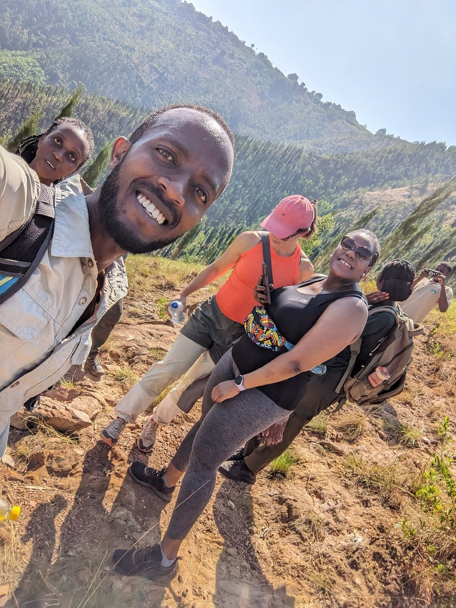
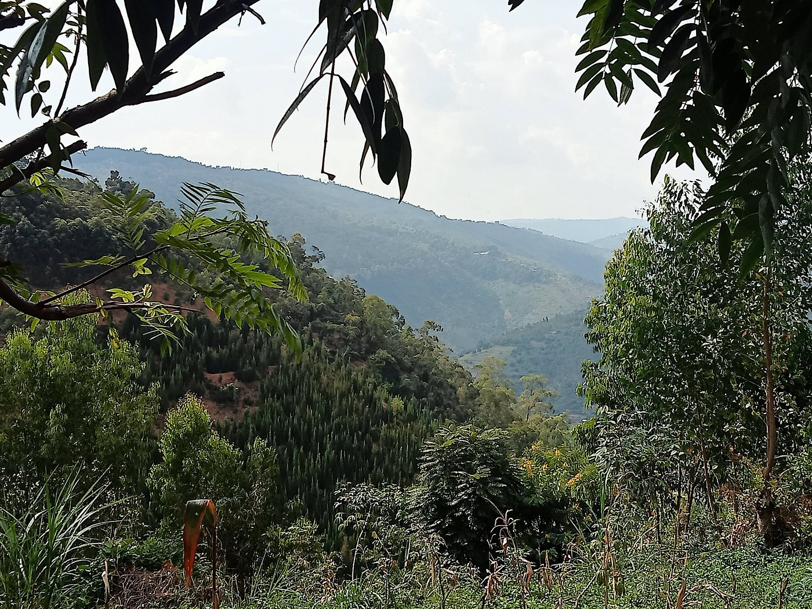
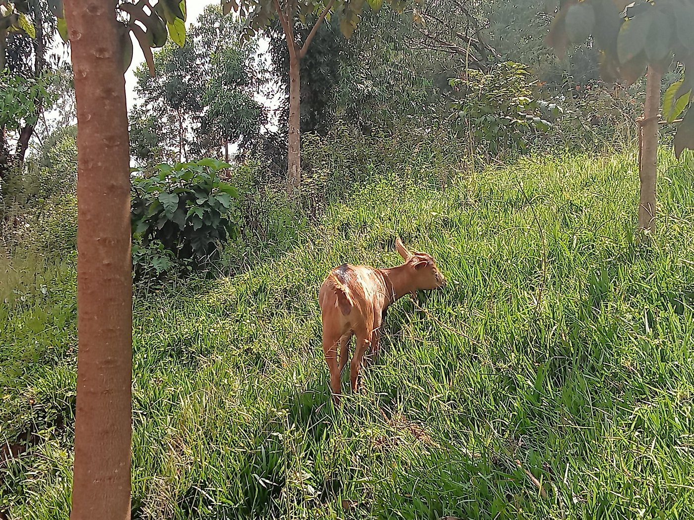
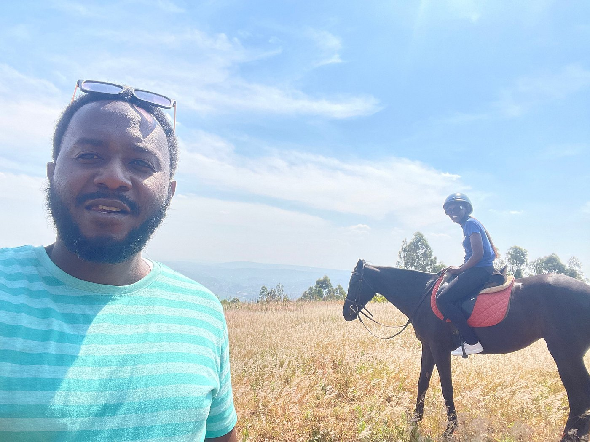
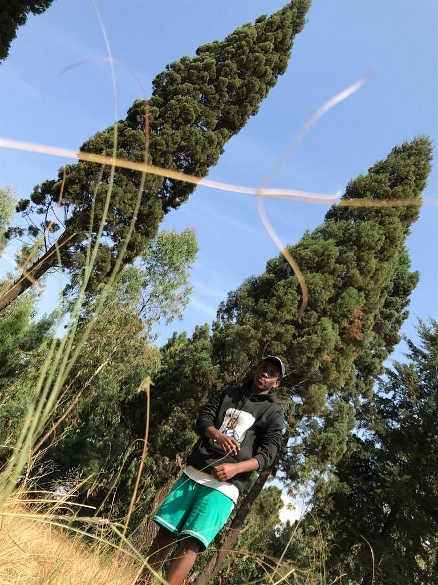
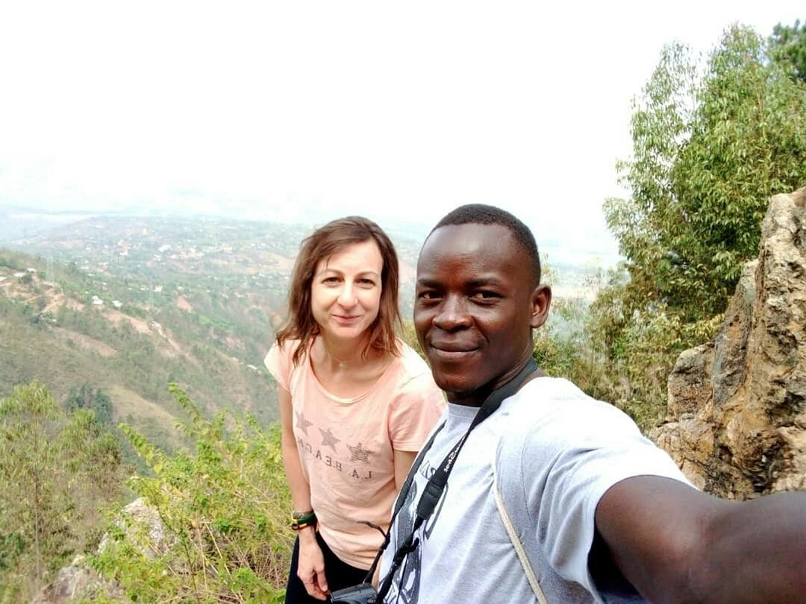

Mount Kigali
Climb, explore, and enjoy breathtaking views
About Mount Kigali
Mount Kigali, standing at approximately 1,850 meters (6,070 feet), is one of Kigali's most iconic natural landmarks. The mount offers an excellent hiking opportunity for visitors of all skill levels, with well-maintained trails that wind through lush vegetation and provide stunning panoramic views of the city and surrounding countryside.
The hike takes approximately 2-3 hours depending on your fitness level and pace. At the summit, you'll find a scenic viewpoint where you can rest, take photos, and enjoy the fresh mountain air while overlooking the entire Kigali landscape. The trail is open year-round, with the best hiking conditions during the dry seasons (June-September and December-February).
Hiking Information
Duration
2-3 hours round trip
Difficulty
Moderate
Distance
Approximately 5 km
Elevation
1,850 meters / 6,070 feet
What to Carry/Wear
Clothing & Footwear
- Comfortable hiking boots with good grip
- Breathable moisture-wicking shirt
- Long pants or hiking trousers
- Light jacket or sweater for upper elevation
- Hat or cap for sun protection
- Sunglasses
- Extra pair of socks
Essential Items
- Backpack (20-30 liters)
- Water bottle (2-3 liters)
- Snacks (energy bars, nuts, fruit)
- Sunscreen SPF 30+
- Insect repellent
- First aid kit
- Phone for emergencies
- Camera or smartphone
Optional Items
- Binoculars for bird watching
- Hiking poles for knee support
- Portable charger
- Notebook for sketching
- Field guide for local flora
- Lightweight rain jacket
- Map and compass
Gallery

Scenic Trail

Summit View

Mountain Trail

Mountain Landscape

Hiking Path
Panoramic View

Mountain Scenery

Mountain Peak
Hiking Tips
- Start early in the morning for better weather and views
- Maintain a steady pace and rest when needed
- Stay hydrated - drink water regularly
- The descent is harder on knees - take it slow
- Avoid hiking alone - go with a friend or guide
- Check weather forecast before heading out
- Respect the natural environment and local rules
Ready to Hike?
Whether you're a seasoned hiker or visiting for the first time, Mount Kigali offers an unforgettable experience with stunning views and fresh mountain air.
Plan Your Visit